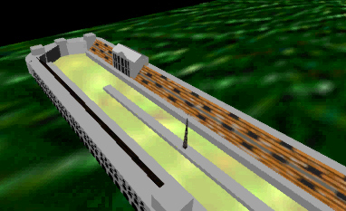
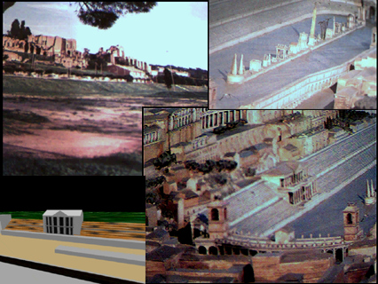

| |
 
Circus Maximus
Circus Maximus is a short documentary video that describes the architecture and uses of the huge chariot racing track in ancient Rome. This was the first ADA video to use 3D rendering to help explain the subject. Shown in the pictures is a 3D model of the stadium. In the video, ray-traced flybys of the model are used to give a better idea of what the structure looks like and what its different parts are used for.
 
Home
|